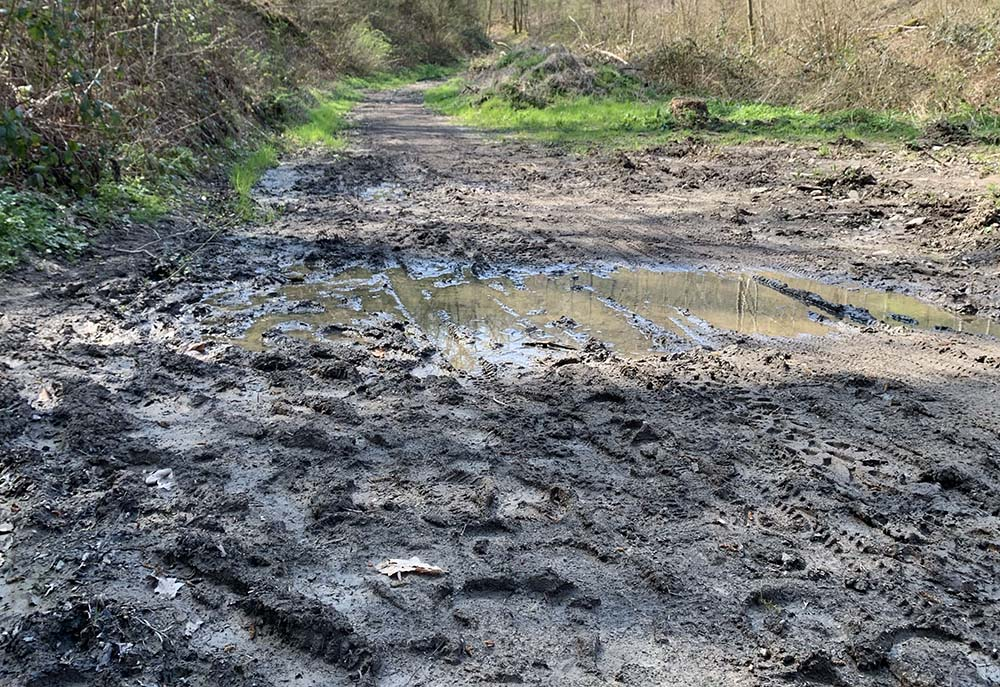

Ensemble,
en toute sécurité
PathMate servira à connaître l'état des chemins forestiers grâce à la participation des utilisateurs. Vous pourrez signaler les obstacles, les difficultés ou encore l'état du chemin. Vous aiderez ainsi la communauté à éviter les mauvaises surprises et à choisir un itinéraire adapté. L’idée de cette application est née dans le cadre du projet pour notre TFA. Cette landing page servira donc à expliquer le processus de recherche.
Comprendre les besoins
Pour en arriver à cette idée, je me suis rapproché de la communauté pour comprendre leurs besoins et les aider au mieux. Pour celà, je me suis d’abord concentré sur les cyclistes, via différentes interviews et rencontres, notamment en roulant avec eux. J’ai pu rencontrer Arthur, Quentin, ou encore le club vtt d’Evrehailles. Ces rencontres furent riches en réponses intéressantes pour moi.
Après une mise en commun et une analyse des réponses obtenues, voici les problèmes les plus fréquemment rencontrés par les vététistes :

Chemin bloqué

Chemin trop technique

Arbre Tombé

La chasse

Chemin dangereux
État du chemin
J’ai constaté que certains problèmes n’étaient pas réservés aux vététistes mais aussi à tous utilisateurs de chemins boisés. J’ai donc élargi mon panel d’utilisateurs pour le proposer à tous.

Prommeneurs
Chasseurs

Cyclistes

Motards

Garde forestiers
Une sécurité collective
Mon idée
Pour vous aider à éviter de passer par un itinéraire finalement bloqué, en mauvais état ou dangereux, l’idée est de créer une application qui vous permettrait de savoir en temps réel si les sentiers que vous souhaitez emprunter sont accessibles ou non. L'application permettrait à chaque utilisateur de signaler facilement tout problème rencontré en précisant où ils sont via géolocalisation. Les autres utilisateurs pourraient alors consulter la carte à tout moment pour constater le problème rencontré.
Audit
J’ai remarqué que certaines applications du même principe existaient déjà et sont très populaires mais elles sont réservées aux automobilistes. Voici quelques exemples
Un audit qui confirme
Ces applications et fonctionnalités sont très utiles, mais elles sont soit limitées aux routes, soit ne permettent pas d'interagir en direct. Une fois votre parcours créé, rien ne vous garantit que vous saurez l’emprunter. Actuellement, il n'existe donc pas d'application en temps réel pour les perturbations dans les bois ou campagne. À noter que je suis également retourné vers certains des utilisateurs avec qui je m’étais entretenu pour leur expliquer brièvement mon idée. Ce retour vers les utilisateurs à permis de valider mon idée car les retours que j’ai obtenu ont été très positif, avec une approbation globale. Ils m’ont cependant incité à me tourner essentiellement vers la partie signalement en tout genre et ne pas développer la partie création d’itinéraire, comme j’avais en tête. Ce retour m’a donc également permis de me concentrer sur l’essentiel.
Les fonctionnalités et signalements
PathMate permettra à ses utilisateurs de signaler en temps réel les obstacles, les difficultés ou l'état du chemin que vous empruntez, afin de faciliter la pratique de ces activités en toute sécurité. Découvrez en plus sur les avantages et les différentes fonctionnalités.
obstacles sur le chemin
Si le promeneur rencontre un arbre tombé en travers du chemin, une branche cassée, une pierre qui bloque le passage ou tout autre obstacle.
Une explication du passé
Je vais revenir au début du projet, aux prémices, pour expliquer pourquoi j'ai choisi la catégorie d'utilisateurs des vététistes. J'ai pris cette décision car je fais partie de cette communauté et que je rencontre souvent des problèmes lors de mes sorties. J'ai donc réalisé qu'il y avait de nombreux défis à relever dans ce domaine. Au début, je suis resté trop attaché à mon idée de base, ce qui n'était pas bon et n'a pas porté ses fruits car je devais d’abord me concentrer sur les problèmes des autres utilisateurs. Cependant, grâce aux entretiens que j'ai menés avec les vététistes et aux problèmes qu'ils m'ont décrits, j'ai eu l'idée de créer l'application PathMate. La suite du développement de l'idée a été plus simple pour moi car je "connais" ou du moins pense connaître les envies et besoins des vététistes pour améliorer ces problèmes. Mes utilisateurs ce sont d’ailleurs élargis car je pense que l’application pourrait être bénéfique à tout le monde.
Ce projet m'a donc énormément motivé car si j'arrive à mener à bien cette idée, notamment pendant ma troisième année, je sais que je pourrai aider de nombreuses personnes à profiter des bois en toute sécurité, y compris moi-même.
Une idée pour le futur
Pour notre projet, nous devons parler en notre personne pour décrire nos idées et recherches, mais j’ai imaginé un instant que l’application était déjà en ligne et que je devais convaincre des utilisateurs. Voici un extrait qui pourrait servir de pub ou sur le site de présentation de la ( peut-être ) future application:
“Êtes-vous fatigué de vous retrouver bloqué lors de vos sorties en famille à cause d'un arbre qui obstrue votre chemin ? Ou peut-être que vous avez été confronté à un sentier fermé pour la chasse ? Ne laissez plus ces obstacles vous gâcher vos moments de détente en plein air ! Grâce à notre application, vous pouvez savoir en temps réel si les sentiers que vous souhaitez emprunter sont accessibles ou non. Imaginez une randonnée en famille sans stress ni frustration. Une promenade dans la nature où vous pouvez profiter pleinement de chaque instant ensemble. Avec notre application, c'est possible ! Rejoignez-nous dès maintenant et explorez le monde avec votre famille en toute sérénité !”